Weekly Flip
Scale
Which is bigger: Africa, or the U.S., China, and India combined?
Explore by theme
Perspective
What perspective am I missing?
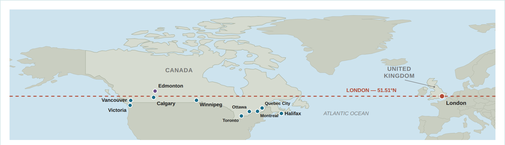
Is London north of Vancouver, Calgary, and Toronto?
Time
Is it a difference in time, or in how we label it?
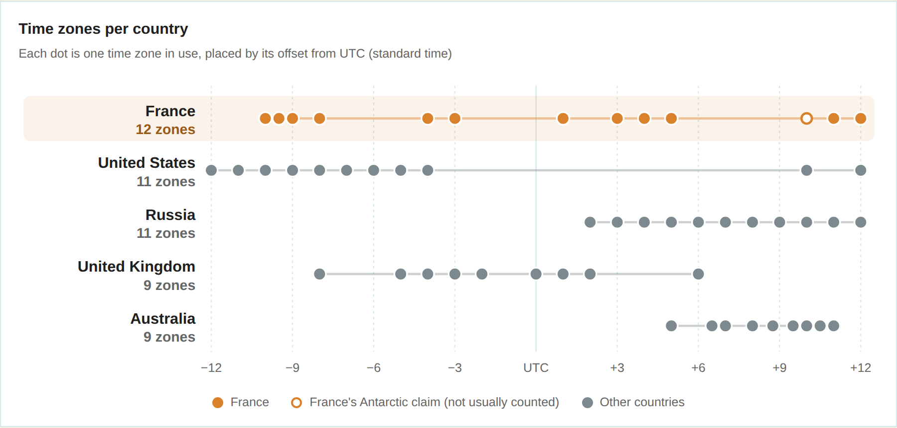
Which country has the most time zones?
Scale
How big is the difference, really?
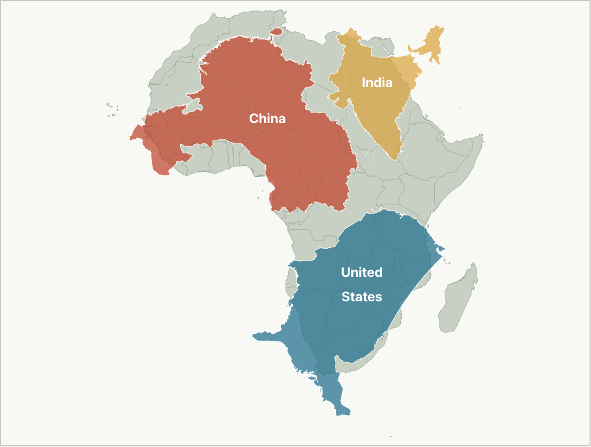
How big is Africa... really?
Measurement
What does this measurement leave out?
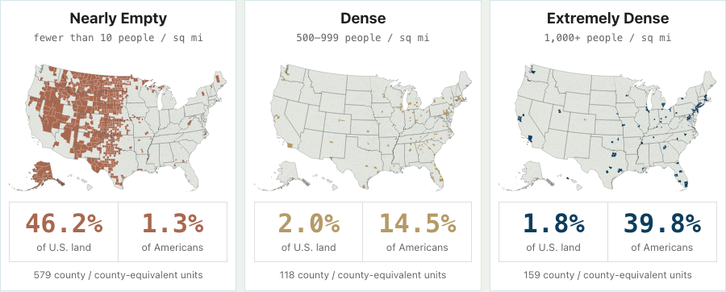
How can the same country look almost empty, and unbelievably crowded?
Distribution
How is it actually distributed?
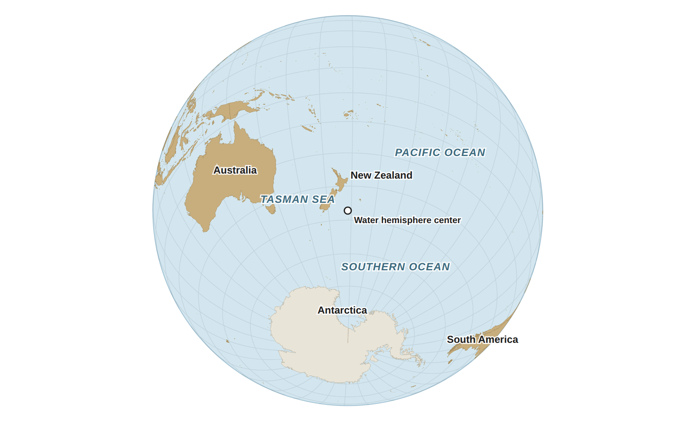
Can you see half the Earth and almost no land?
Statistics
What does this number really support?
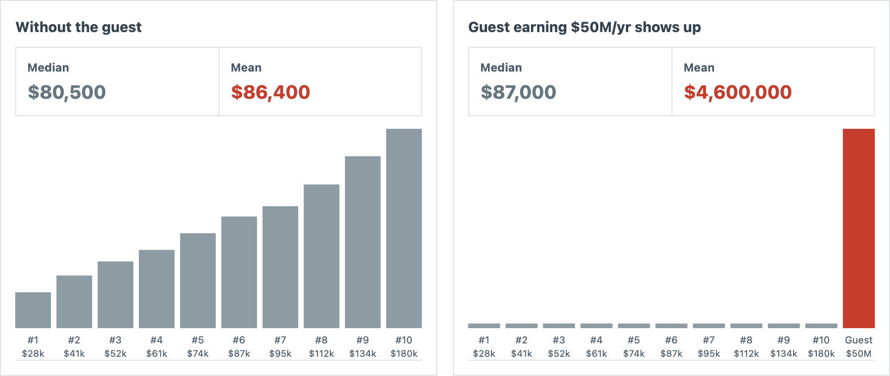
What’s the average income at this BBQ?
Probability
What really determines these odds?
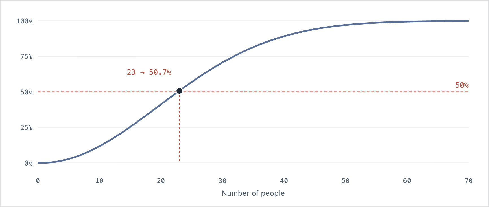
How many people does it take before a shared birthday is more likely than not?
Optimization
What is the actual goal?
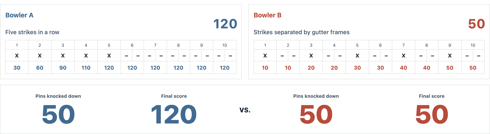
Can two bowlers knock down the same 50 pins and finish 70 points apart?
Systems
What else changes when this changes?
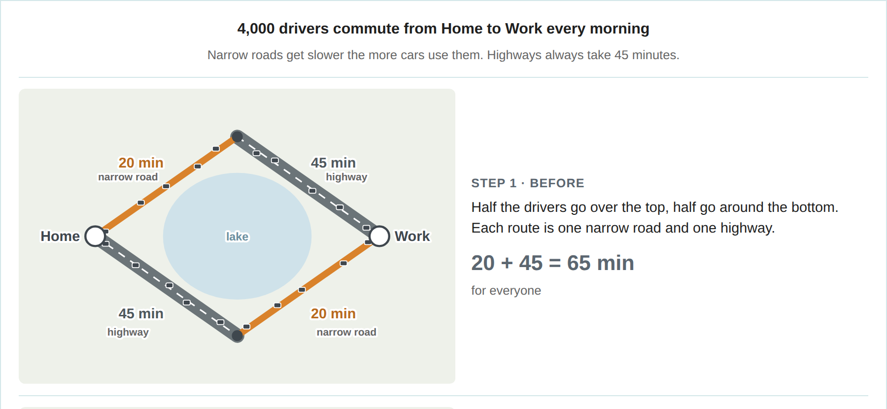
Can a new road make traffic worse?
Newest
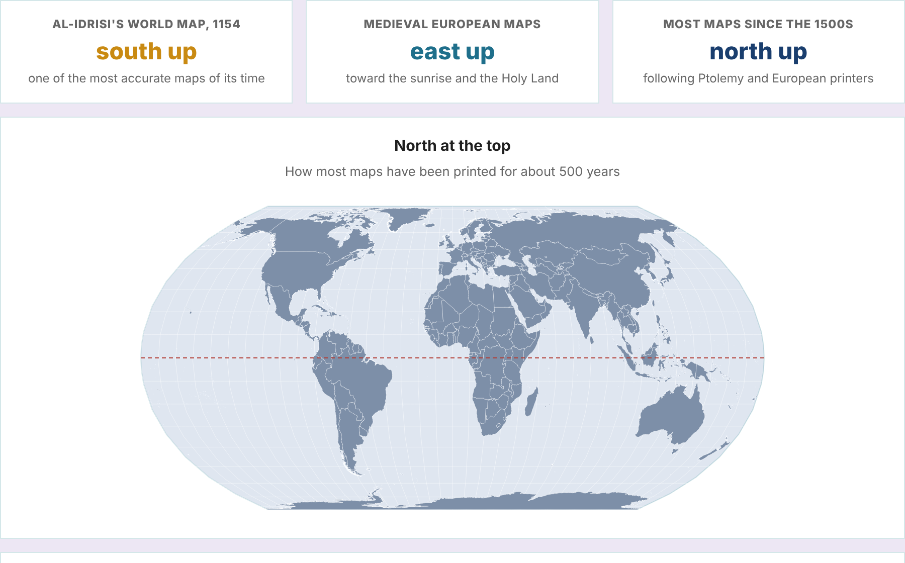
Why is north at the top of the map?
Space has no up. Al-Idrisi put south on top in 1154.
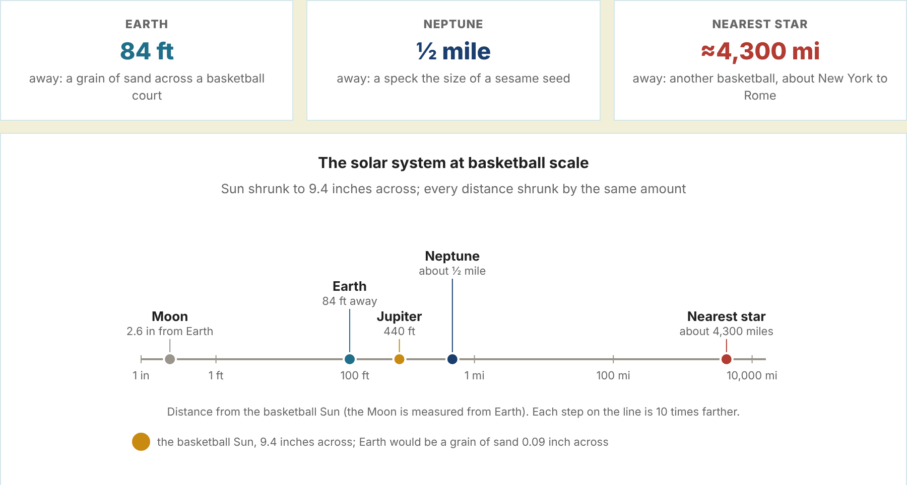
If the Sun were a basketball, how far away would the nearest star be?
Earth is a grain of sand 84 feet away. The next star is 4,300 miles off.
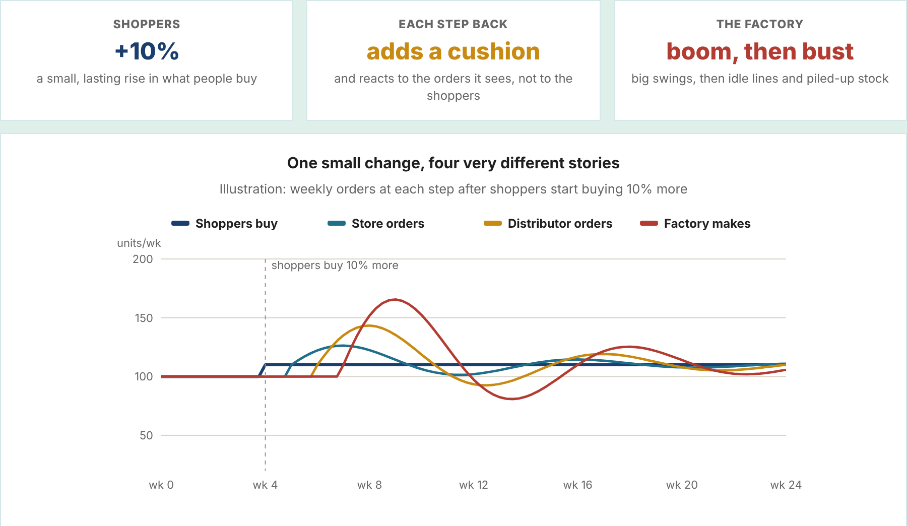
How does a 10% rise in sales turn into a factory crisis?
Each step in a supply chain overreacts a little more than the last.
Use Hanten
Classroom
Five minutes. One discovery.
Ready-to-use activities built from Hanten exhibits: students predict, see what happens, then use the idea somewhere new. Mean vs. Median is free.
See the classroom lessons →Why Hanten?
反転 (hanten) is a Japanese word meaning reversal, inversion, or turning something over.
That idea is at the heart of Hanten: look again. Change the perspective, scale, measure, or frame, and something familiar can reveal a very different story.